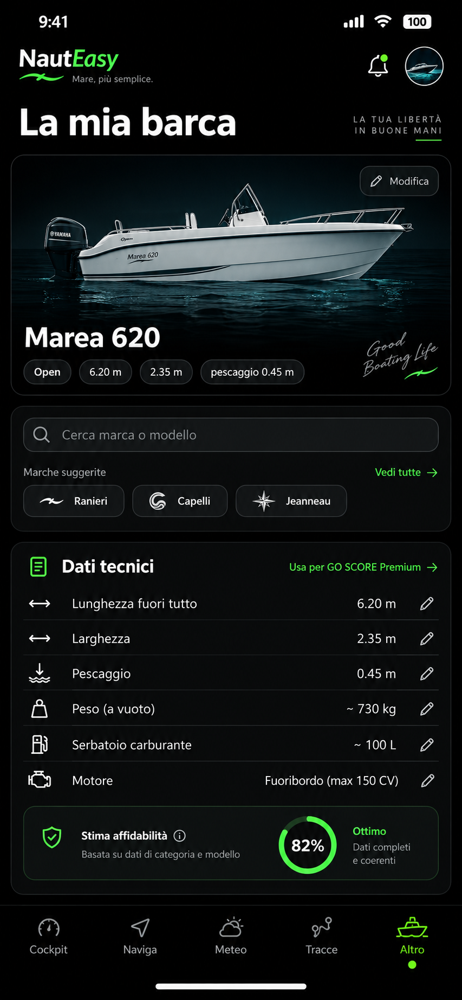

45.4408° N
12.3155° E
12.3155° E
SOG 8.2 kn
COG 218°
COG 218°
NAUTEASY · TESTFLIGHT iOSIl mare davanti a te.
Il mare davanti a te.
NautEasy con te.
La navigazione reale entra nella tua esperienza digitale.
Scopri NautEasy ↗

12.4 km218°3.2 m8 kn
CANALI10 km/h✦ FARIMARINE
SCROLL TO ENTER
△
CANALE · 0110 km/h · LIMITI LOCALI✦ SEAMARKMARINA · SERVIZI03 · ENTER THE MAPLa mappa
La mappa
prende vita.
La rotta viene disegnata. I layer compaiono uno alla volta. La barca avanza nel paesaggio che stai leggendo.

METEO · 18°MAREA+0.42 m
04 · REMEMBER THE JOURNEYOgni uscita
Ogni uscita
lascia una storia.
La traccia rallenta. Il viaggio torna nel Registro.
VENEZIA · 18:42
TRACK · 12.4 NM